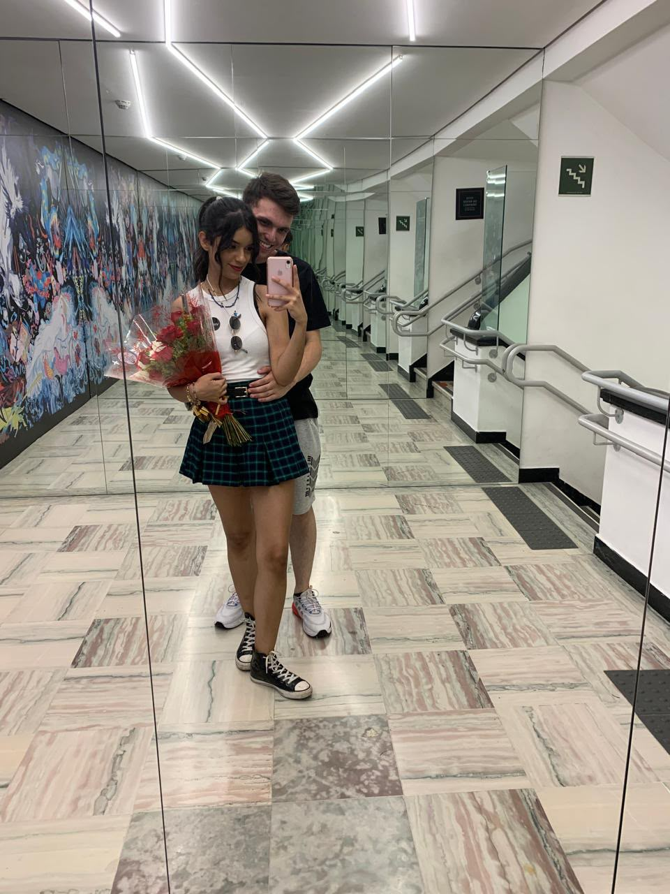
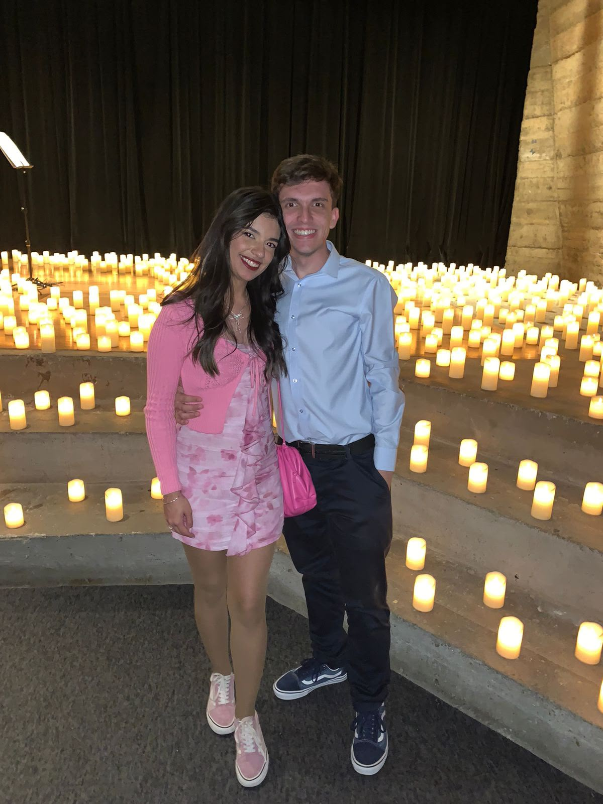
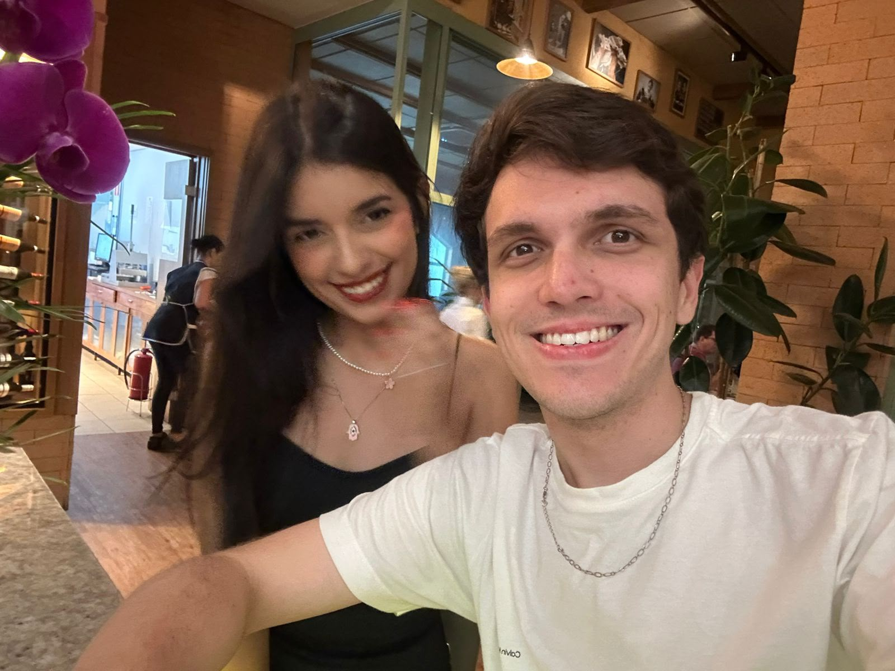
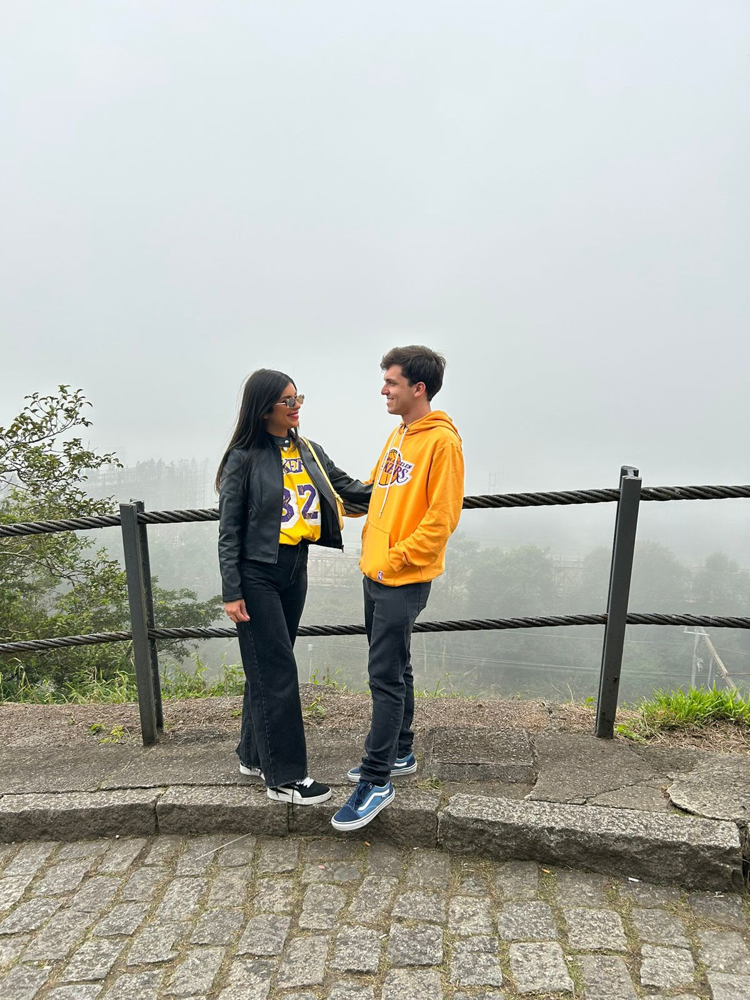
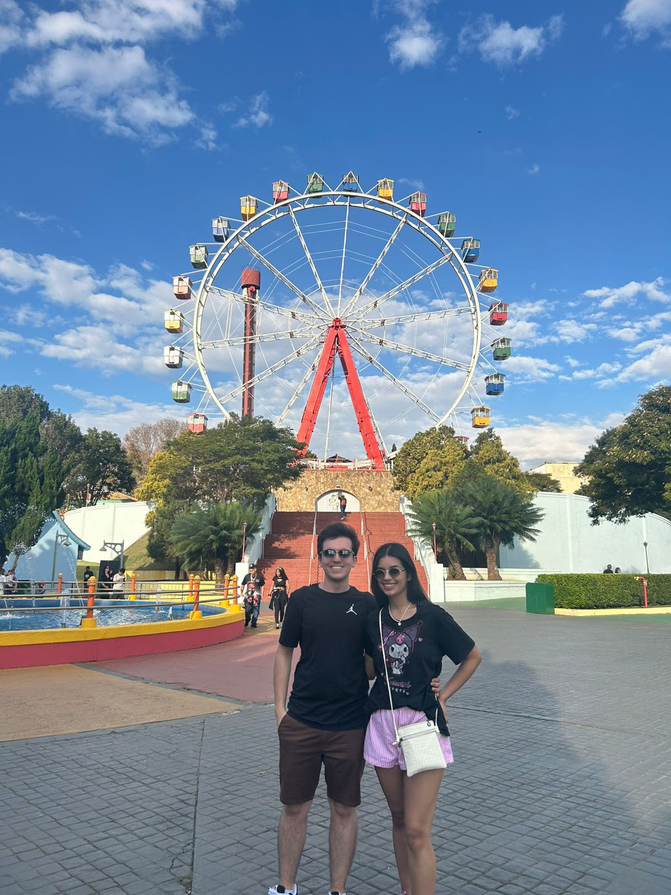
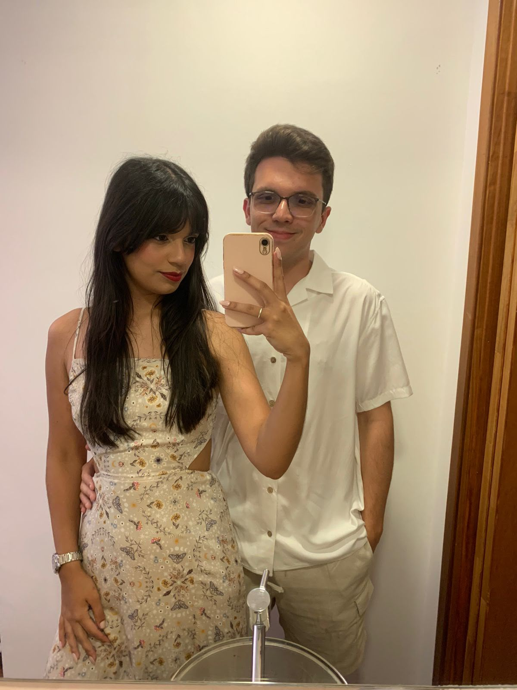
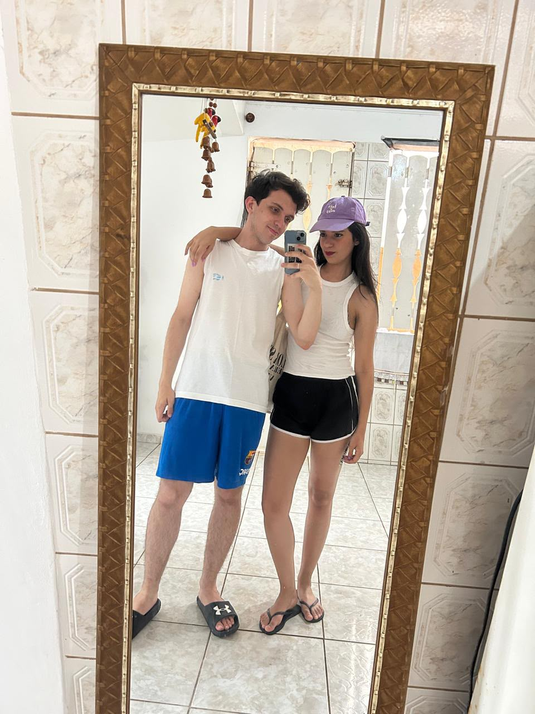
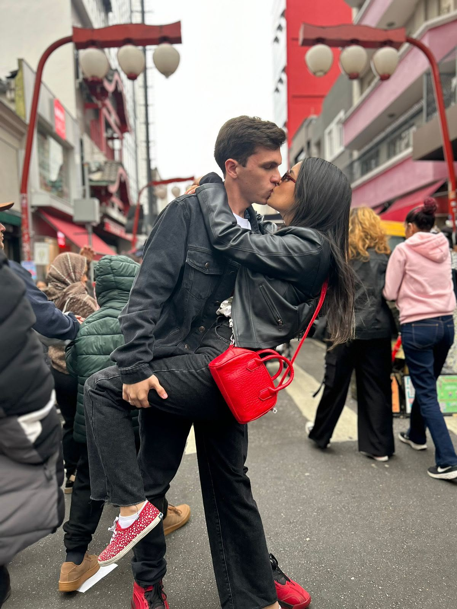

Matheus
Você recebeu uma mensagem especial ❤️
toque para começar
Feliz Dia dos
Namorados
Estephanie
Com todo o meu amor
nosso amor em tempo real
Juntos há...
02 de março de 2024
Como Tudo
Começou
← deslize as fotos →

Nossos primeiros dates
A protagonista
Minha
Gata
Especial
Quiz do Dia
dos Namorados
Qual foi o nosso terceiro date?
Isso mesmo!
O Farol Santander foi nosso terceiro date e nesse dia nós passeamos por SP inteira com um buquê de rosas que eu te dei ❤️
guardados no coração
Momentos
Favoritos







Lover
Taylor Swift
♪ Adicione lover.mp3 em assets/music/
toque em uma estrela
Cada estrela guarda
uma memória
✦ toque nas estrelas maiores ✦
Você percorreu
toda a nossa história...
E ainda temos tantos capítulos
a escrever juntos
Meu amor, a vida ao seu lado é mais leve, mais bonita e mais feliz. Ao seu lado, me sinto a pessoa mais feliz do mundo.
E este é apenas mais um capítulo da nossa história, porque ainda temos muitos sonhos, momentos e páginas para escrever juntos.
Eu te amo ❤️
Com todo o meu amor,
Matheus
12 de junho de 2026